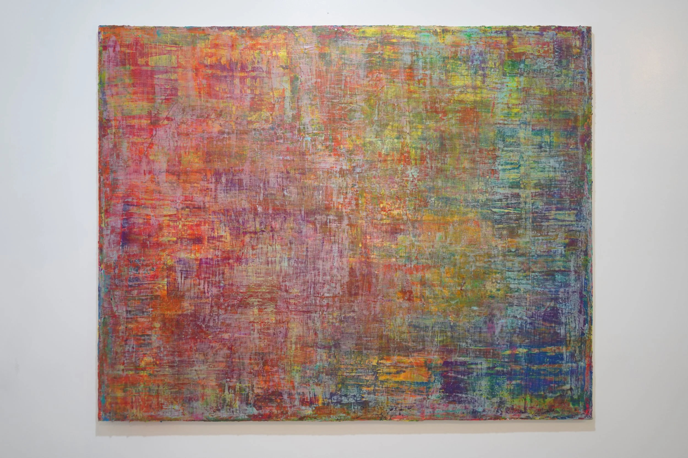
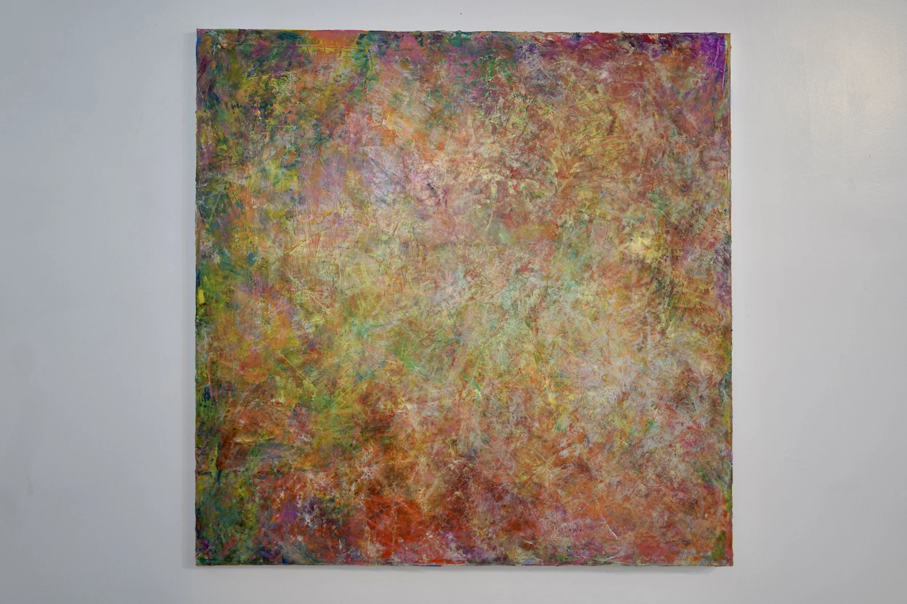
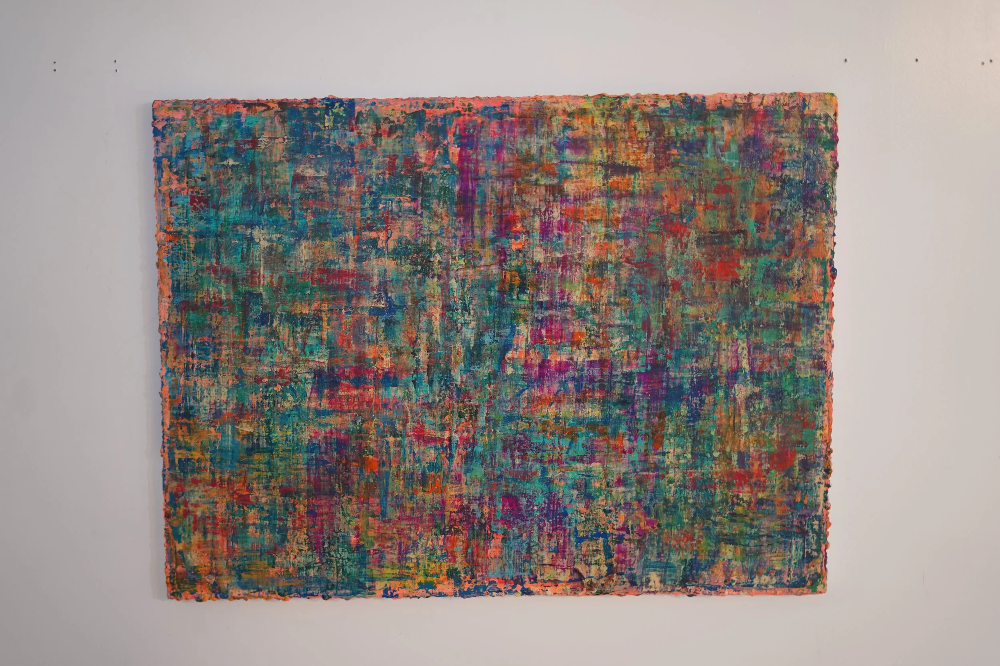
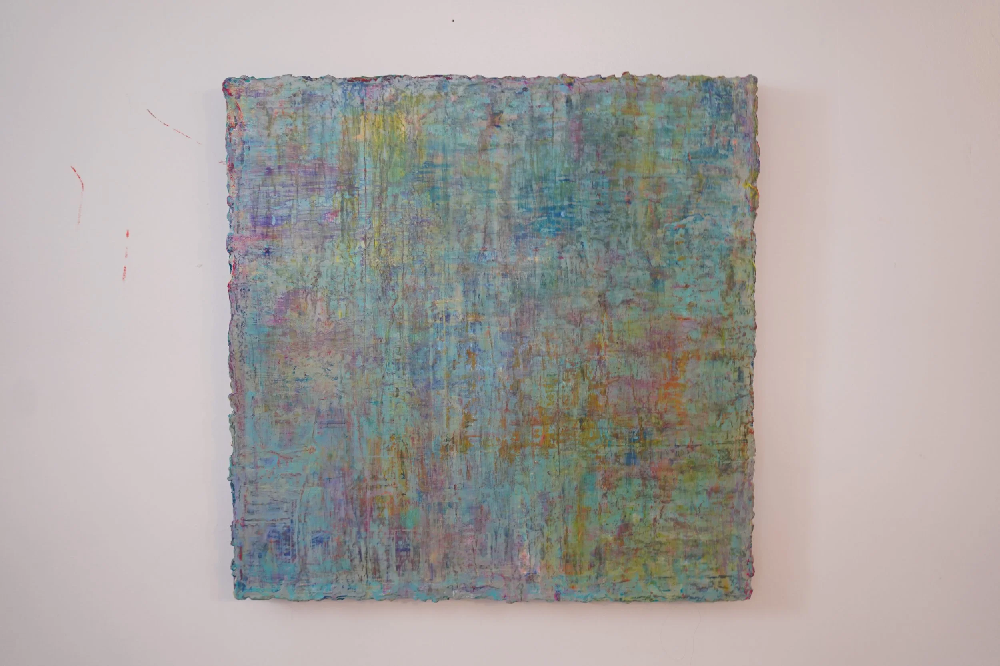
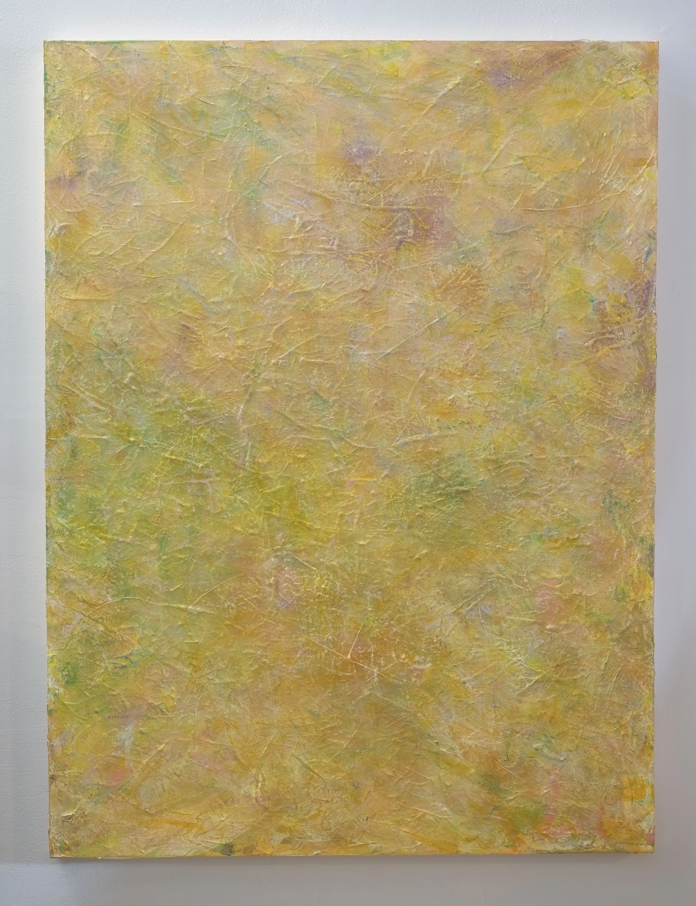
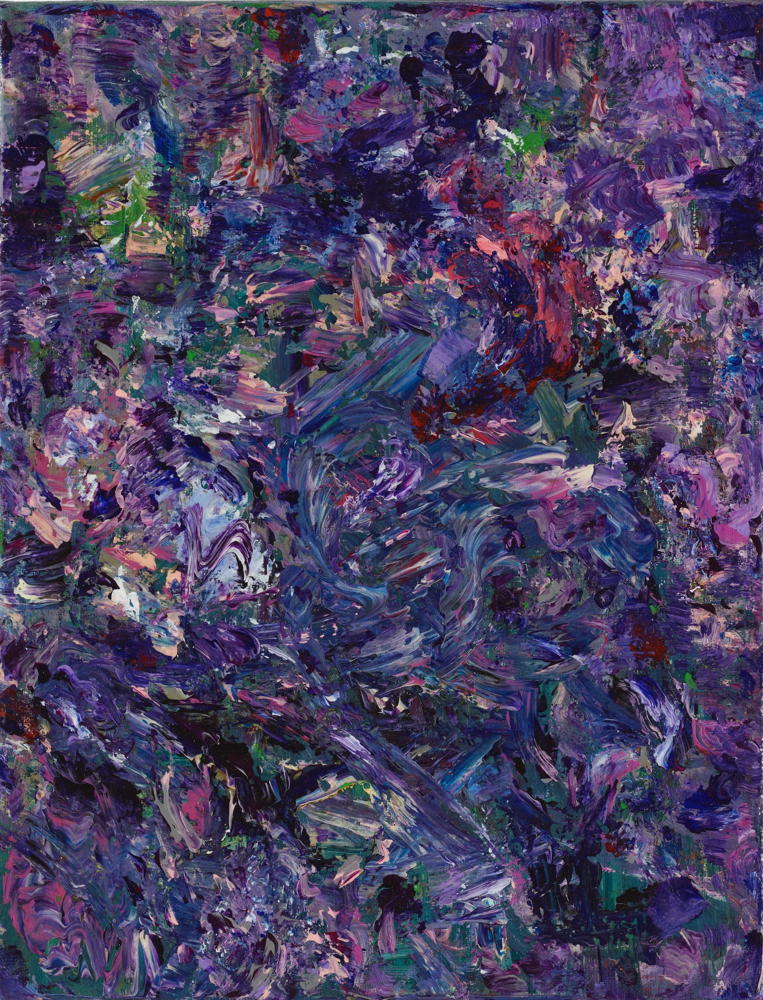
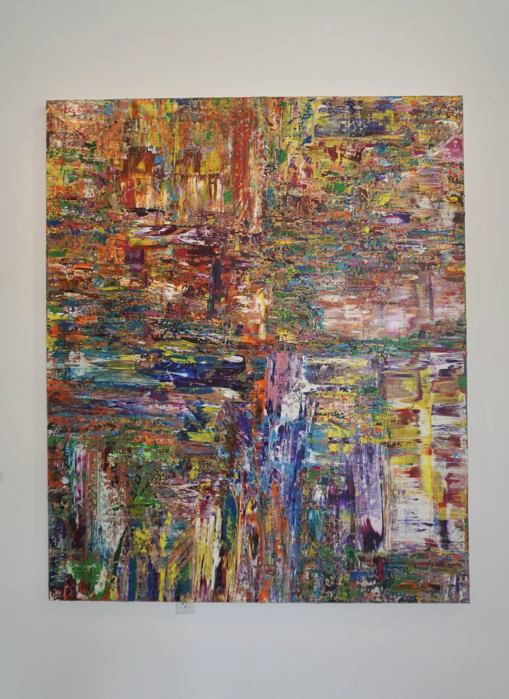
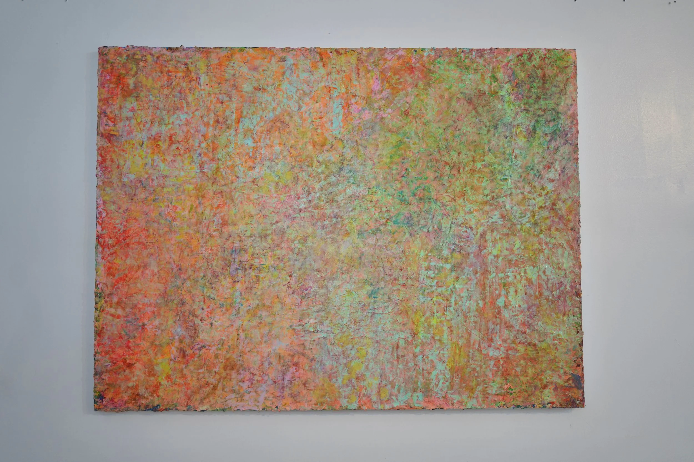

Works作品
In Takuma Watanabe's work, color does not assert itself loudly.
It emerges quietly, as a presence shaped by light, time, and memory.
Layers of pale color shift with distance and perspective, inviting a slower form of looking.
渡辺琢真の作品では、色彩は強く主張するものではなく、静けさの中にゆっくりと現れる気配として描かれます。
画面に重ねられた淡い色の層は、光、時間、記憶のように、見る角度や距離によって異なる表情を見せます。








